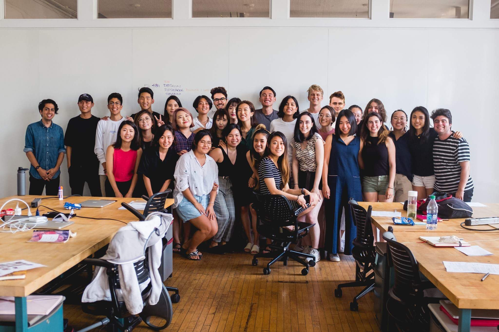
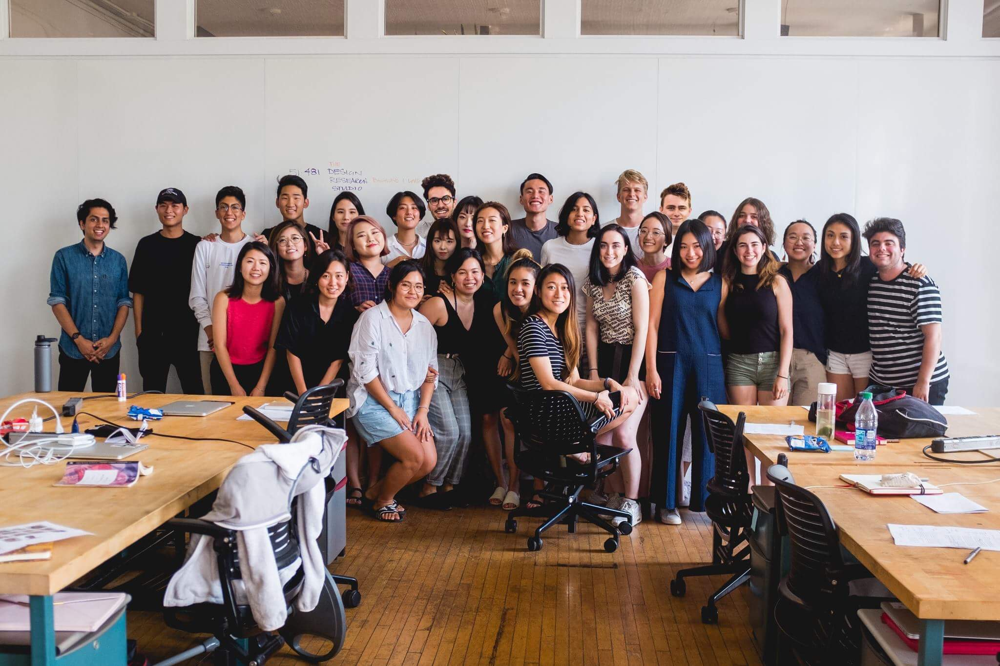

enthusiast. She can be found reimagining creative tools on the internet at Runway
enthusiast. She can be found reimagining creative tools on the internet at Runway , catching up on Time To Say Goodbye, and always in search for a good croissant.
, catching up on Time To Say Goodbye, and always in search for a good croissant.
In recent history, she designed a new homepage experience for WIRED dot com at Condé Nast, and interfaces for creative tools at Apple. She received a B.H.A. in Design and Psychology from Carnegie Mellon University.
dot com at Condé Nast, and interfaces for creative tools at Apple. She received a B.H.A. in Design and Psychology from Carnegie Mellon University.
Thank you for visiting ✌︎(◡ ‿ ◡ ✌︎)